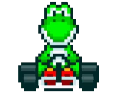
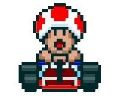
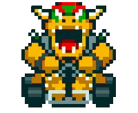

-
Mario

- Player 1
Possui velocidade máxima, aceleração e controle de direção equilibrados.
-
Luigi

- Player 2
Irmão de Mario, que sempre o acompanha em suas aventuras. Assim como Mario, é equilibrado nos quesitos: velocidade máxima, aceleração e controle de direção.
-
Princesa Peach

- Player 3
Princesa do Reino dos Cogumelos e é amiga de Mario e Luigi. Possui grande poder de aceleração, velocidade máxima e controle de direção regulares.
-
Yoshi
- Player 4
Espécie de dinossauro que ajudou os irmãos Mario e Luigi a se encontrarem com seus pais quando eram bebês. Da mesma forma que Peach, possui grande poder de aceleração, velocidade máxima e controle de direção regulares.
-
Tood
- Player 5
Servo de Princesa Peach. Possui ótimo controle de direção, mas velocidade máxima e aceleração baixa. Quando é controlado pelo computador, sempre fica em último.
-
Donkey kong

- Player 6
O filho de Donkey Kong. Apareceu em um jogo no início dos anos 80 com o mesmo nome. Tal como Bowser, possui velocidade máxima, mas aceleração ruim e controle de direção regular.
-
Koopa Troopa

- Player 7
Um dos soldados da tribo Koopa, liderada por Bowser. Como Toad, possui ótimo controle de direção, velocidade máxima e aceleração baixa.
-
Bowser
- Player 8
O chefe da tribo Koopa. Ele é inimigo de Mario e Luigi e frequentemente atacou o Reino dos Cogumelos, sequestrando Princess Peach em inúmeras ocasiões. Possui velocidade máxima, mas aceleração ruim e controle de direção regular.